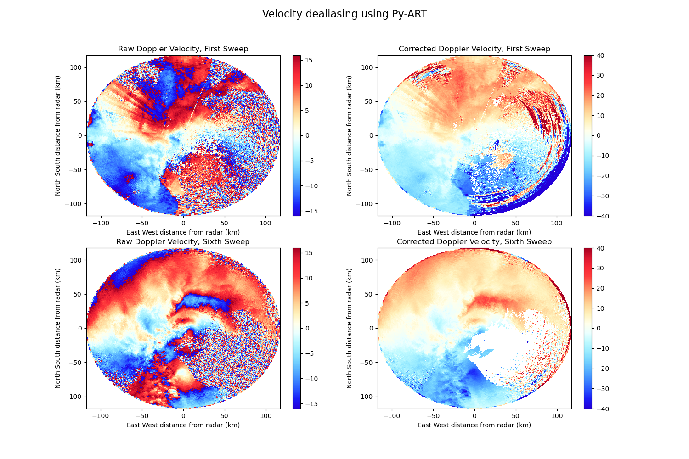

Note
Click here to download the full example code
Dealias doppler velocities using the FourDD algorithm¶
In this example doppler velocities are dealiased using the Univ. of Washington FourDD algorithm implemented in Py-ART. Sounding data is used for the initial condition of the dealiasing.
Out:
/home/zsherman/dev/pyart/examples/correct/plot_dealias.py:64: UserWarning: Matplotlib is currently using agg, which is a non-GUI backend, so cannot show the figure.
plt.show()
print(__doc__)
# Author: Jonathan J. Helmus (jhelmus@anl.gov)
# License: BSD 3 clause
import matplotlib.pyplot as plt
import netCDF4
import pyart
SOND_NAME = 'sgpinterpolatedsondeC1.c1.20110510.000000.cdf'
RADAR_NAME = '095636.mdv'
# read in the data
radar = pyart.io.read_mdv(RADAR_NAME)
# read in sonde data
dt, profile = pyart.io.read_arm_sonde_vap(SOND_NAME, radar=radar)
# create a gate filter which specifies gates to exclude from dealiasing
gatefilter = pyart.filters.GateFilter(radar)
gatefilter.exclude_transition()
gatefilter.exclude_invalid('velocity')
gatefilter.exclude_invalid('reflectivity')
gatefilter.exclude_outside('reflectivity', 0, 80)
# perform dealiasing
dealias_data = pyart.correct.dealias_fourdd(
radar, sonde_profile=profile, gatefilter=gatefilter)
radar.add_field('corrected_velocity', dealias_data)
# create a plot of the first and sixth sweeps
fig = plt.figure(figsize=(15, 10))
ax1 = fig.add_subplot(221)
display = pyart.graph.RadarDisplay(radar)
display.plot('velocity', 0, vmin=-16, vmax=16, ax=ax1,
colorbar_label='', title='Raw Doppler Velocity, First Sweep')
ax2 = fig.add_subplot(222)
display.plot('corrected_velocity', 0, vmin=-40, vmax=40,
colorbar_label='', ax=ax2,
title='Corrected Doppler Velocity, First Sweep')
ax3 = fig.add_subplot(223)
display = pyart.graph.RadarDisplay(radar)
display.plot('velocity', 5, vmin=-16, vmax=16,
colorbar_label='', ax=ax3,
title='Raw Doppler Velocity, Sixth Sweep')
ax4 = fig.add_subplot(224)
display.plot_ppi('corrected_velocity', 5, vmin=-40, vmax=40,
colorbar_label='', ax=ax4,
title='Corrected Doppler Velocity, Sixth Sweep')
plt.suptitle('Velocity dealiasing using Py-ART', fontsize=16)
plt.show()
Total running time of the script: ( 0 minutes 7.253 seconds)